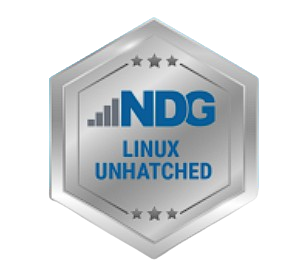
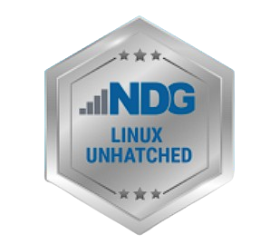

☰ Matérias
Quem sou eu?
Me chamo Sofia Nimet Chaves, tenho 17 anos, nasci e moro em Florianópolis. Desenho com frequência desde pequena, tanto tradicionalmente quanto digitalmente. Sempre tive os mesmos hobbies e hábitos, como o interesse em arte, jogos, música,
fóruns online e programação. Costumo ler sobre vários tópicos diferentes online independente do assunto, por curiosidade. Então nunca soube exatamente no que eu gostaria de me aprofundar, mas acabei me adaptando bem ao curso técnico, agora
com mais certeza sobre quais assuntos desejo explorar. No meu tempo livre, costumo praticar meus interesses com vários pequenos projetos pessoais, como por exemplo, uma equipe vuluntária na tradução de strings de alguns jogos para trazer
o público brasileiro aos mesmos, e ao longo do ano, espero explorar mais áreas e assuntos de programação. Tanto profissionalmente quanto projetos independentes, e espero também me aprofundar mais em design e programas de fins artísticos
e ilustração.
Certificados

 
